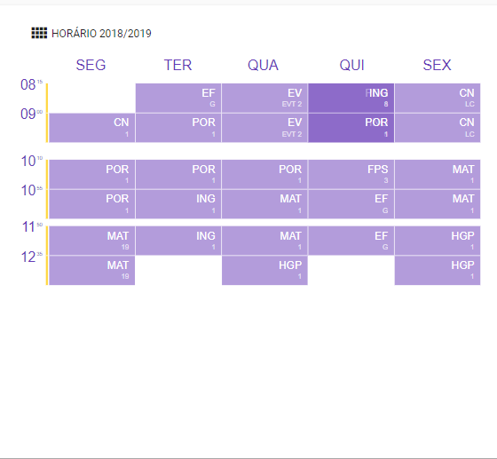

Horários
"Tempo letivo"- Carga horária semanal organizada em períodos de 45/50 minutos... Em situações justificadas, a escola poderá utilizar uma diferente organização da carga horária semanal dos alunos, devendo contudo respetitar os totais, assim como o máximo global indicado para cada ciclo e ano de escolaridade."
*Creche, Pré - Escolar e 1º Ciclo
| Componente | Carga Horária | Total |
|---|---|---|
| Compenente Letiva | 25 horas | 25 horas |
| Componente não Letiva | 4 horas | 4 horas |
É importante que as escolas atribuam um horário a todos os docentes a lecionar na escola para que possa haver uma melhor gestão escolar.
Aviso
Na criação de horários, deve tomar atenção às datas de início e de fim. Caso o professor seja substituido, por alguma razão, deve terminar o horário do docente e criar um novo para o docente que irá substituir.
A escola deve manter os horários sempre atualizados, podendo editá-los sempre que for necessário.
Ano 2018/2019
A relação a costrução dos horários dos docentes devem seguir as seguintes intruções:
Tendo em conta que todos os alunos estão matriculados e as turmas estão construidas deve:
- Validar as interrupções Letivas
- Verificar as Salas das atividades ou aulas.
Assegurar que todos os docentes estão inseridos
Verificar os dados profissionais de todos os docentes (Editar a ficha pessoal). Preencher corretamente todos os itens.
Depois de estar criado e editado a ficha de cada docente começamos por organizar:
**A Curricular**
Todas as disciplinas que fazem parte do Currículo:
1º Ciclo
- Português
- Matemática
- Estudo do Meio
- Educação Artística
- Educação Física
- Apoio ao Estudo
- Inglês (3º e 4º ano
- Educação Moral e Religiosa
Titulares e Educadores
a) Selecionar o Docente e clicar em cima do nome
b) Abre os tipos de Cargos (Turmas e Disciplinas)
1º Ciclo
Pré-Escolar
Creche
Em cada uma das valências deve preencher corretamete:
- Tipo de componente
- Disciplina
- Turma/Sala
- Colocar Data de Início
- Guardar informações.
A Curricular (mas que não são dadas pelo titular da turma)
Fazemos o mesmo procedimento que os titulares, apenas mudamos as disciplinas:
Fazemos este procedimento para as disciplinas de:
- Educação Física
- Educação Artística
- Inglês (1º e 2º ano encontram-se na Oferta Complementar; 3º e 4º ano já fazem parte do Currículo)
- Apoio ao Estudo
- Educação Moral e Religiosa
No caso dos docentes que auxiliam na disciplina de TIC, Devem fazer o mesmo procedimento, escolhendo:
- Componente Curricular Transversal
- Disciplina
- turma
- Data de Início
Cargos
Os cargos inserem-se nas áreas dadas que não façam parte do Currículo
Em relaçao a este assunto houve uma pequena alteração:
- Cabe a Escola criar os seus cargos. Para tal, deverá aceder ao separador Docentes e ir ao lado direito ao Menu. Clicar nas Definições de Cargos.
a) Descrever o Cargo ( Dá o nome que achar melhor, de acordo com o interesse da escola) b) Escolher o tipo de cargo c) Gravar
Exemplo dos Vários cargos que as escolas podem adicionar
No caso do Ensino Especial, ou melhor, da Educação para Inclusão devem igualmente criar cargos com esta designação, salientando a valência caso seja necessário.
- Educação para a Inclusão pré- escolar
- Educação para a Inclusão 1º Ciclo
Depois de ter os cargos todos criados, deve aceder ao separador dos Docentes e aí preencher os "Cargos e Atividades"
- Mencionar o que cada docente leciona. É importante preencher o tipo de cargo para que as horas sejam defenidas, preenchidas e entendidas corretamente.
Turmas
Os horários das turmas são criados nas respetivas turmas e não nos docentes
- Deve aceder a turma
- clinar no separador horário
- Editar
- Criar Blocos:
- Escolher o dia da semana
- Horário da aula
- Componente
- Disciplina
- sala
- Docente
- Gravar
Nota
Sempre que criarem novos blocos com data de início anterior a data de criação, devem atualizar o bloco desde o início para que o sumários sejam gerados. Este procedimento é feito no horário da turma e não no do professor.
Exemplo de Horário da Titular do 1º Ciclo

**Tipos de Cargos**
| Tipos de Cargos existentes | Designações (evetuais) |
|---|---|
| Acerto de Horário | Amamentação, Sindicatos, Antiguidade, Intervalos... |
| AEC´s | Biblioteca, Ed. Física, Inglês, Música, TIC, Estudo... |
| Apoios | Todo o tipo de apoio fornecido pela Escola |
| Cargos de Gestão Executiva | Coordenação |
| Cargos de Gestão Intermédia | Coordenador Regional... |
| Clubes | Todo o tipo de clubes criados pela escola |
| OTL´s | OTL |
| Outras atividades em trabalho na Escola | Coordenador de TIC, Tratamento documental, Pesquisa e Organização de Materia... |
| Projetos | Todos os projetos criados pela escola |
| Substituições | |
| Tempo Letivo (Fora da Escola) | Direção Artística e Multimédia |
| Tempo não letivo (Fora da Escola) | Preparação de Atividades, Reuniões... |
| Titulares de Turma | |
| Vigilância | Supervisão no Recreio, no refeitótio... |
Importante
As designações apresentadas anteriormente são apenas algumas ideias existentes. Não deverão ser únicas e exclusicas (não existem só estas). Cada escola pode criar a designação que achar mais adequada ao tipo de cargo que deseja anexar.